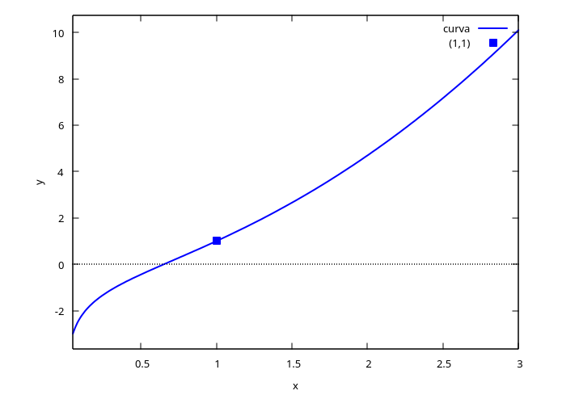

Introducción
Breve historia de las ecuaciones diferenciales y ejercicios resueltos
1 Algo de historia
| Época | Autor(es) | Aporte |
|---|---|---|
| ~450 a.e.c. | Zenón | El movimiento es una ilusión |
| ~350 a.e.c. | Aristóteles | Teleología del movimiento: todo se mueve por otro — el primer motor inmóvil |
| S. XVII | Newton (Principia, 1687) | Quiere describir el movimiento, el cambio. Para eso inventa el cálculo y las ecuaciones diferenciales: cómo cambian las cosas, en lugar de dónde están o por qué cambian |
| S. XVIII | Bernoulli (Jacob, Johann, Daniel) | La braquistócrona, la catenaria y la ecuación de onda |
| S. XVIII | Euler y Lagrange | Reformulan toda la mecánica |
| S. XIX | Laplace | El determinismo |
| S. XIX | Fourier | La ecuación del calor (teoría de funciones) |
| S. XIX | Picard–Lindelöf | La imposibilidad de encontrar, en general, una solución exacta |
| S. XIX | Poincaré | El estudio cualitativo de las ecuaciones |
| S. XX | Lorenz y Smale | Aparecen los sistemas dinámicos y la teoría del caos |
| S. XX | — | Aplicaciones a biología (poblaciones, crecimiento celular), economía, neurociencia (Hodgkin–Huxley–Nagumo), epidemiología (modelo SIR), química (quimiotaxis), física cuántica, formación de estrellas y agujeros negros |
El giro de Newton es el que define el curso: en lugar de preguntar dónde está algo o por qué cambia, una ecuación diferencial pregunta cómo cambia — y de ahí se reconstruye todo lo demás.
2 Ejercicios resueltos del Simmons
Verificar que \(x^2 = 2y^2\log y\) es solución de
\[y' = \frac{xy}{x^2+y^2}\]
Derivamos implícitamente, pensando a \(y\) como función de \(x\):
\[2x = 4y\,y'\log y + 2y^2\cdot\frac{y'}{y} = 4y\,y'\log y + 2y\,y' = 2y\,y'\big(2\log y + 1\big)\]
\[\Rightarrow\quad x = y\,y'\big(2\log y + 1\big)\]
De la ecuación original, \(\log y = \dfrac{x^2}{2y^2}\). Reemplazando:
\[x = y\,y'\left(\frac{x^2}{y^2}+1\right) = y\,y'\cdot\frac{x^2+y^2}{y^2} \quad\Longrightarrow\quad xy = y'(x^2+y^2)\]
\[\Longrightarrow\quad y' = \frac{xy}{x^2+y^2}\ \checkmark\]
kill(all);
depends(y, x);
eq: x^2 = 2*y^2*log(y);
deq: diff(eq, x);
solve(deq, diff(y,x));Encuentre la solución general de
\[(1+x^2)\,dy + (1+y^2)\,dx = 0\]
Se puede escribir como \((1+x^2)y' + (1+y^2) = 0\), de donde
\[y' = -\frac{1+y^2}{1+x^2} \quad\Longrightarrow\quad \frac{dy}{1+y^2} = -\frac{dx}{1+x^2}\]
Integrando ambos lados:
\[\arctan y = -\arctan x + C \quad\Longrightarrow\quad y = \tan\big(C - \arctan x\big)\]
Usando la identidad \(\tan(A-B) = \dfrac{\tan A - \tan B}{1+\tan A\tan B}\) con \(k=\tan C\):
\[y = \frac{k - x}{1 + kx}\]
kill(all);
ode: 'diff(y,x) = -(1+y^2)/(1+x^2);
sol: ode2(ode, y, x);Encuentre la solución particular de
\[(x+1)(x^2+1)\,y' = 2x^2+1, \qquad y(0)=1\]
\[y' = \frac{2x^2+1}{(x+1)(x^2+1)}\]
Hacemos fracciones parciales: \(\dfrac{2x^2+1}{(x+1)(x^2+1)} = \dfrac{A}{x+1} + \dfrac{Bx+C}{x^2+1}\)
\[2x^2+1 = A(x^2+1) + (Bx+C)(x+1) = (A+B)x^2 + (B+C)x + (A+C)\]
Igualando coeficientes:
\[(1)\ A+B=2 \qquad (2)\ B+C=0 \qquad (3)\ A+C=1\]
De (2), \(C=-B\). Sustituyendo en (3): \(A-B=1\). Sumando con (1): \(2A=3 \Rightarrow A=\tfrac32\), luego \(B=\tfrac12\) y \(C=-\tfrac12\).
\[y' = \frac{3/2}{x+1} + \frac{1}{2}\cdot\frac{x}{x^2+1} - \frac{1/2}{x^2+1}\]
kill(all);
ode: (x+1)*(x^2+1)*'diff(y,x) = 2*x^2+1;
sol: ode2(ode, y, x);
ic1(sol, x=0, y=1);Como la ecuación es de primer orden, la condición inicial se fija con ic1, no con ic2 (esa es para ecuaciones de segundo orden, que necesitan \(y\) y \(y'\) en el punto).
Integrando:
\[y = \frac32\log|x+1| + \frac14\log(x^2+1) - \frac12\arctan x + K\]
Con la condición \(y(0)=1\): \(1 = 0+0-0+K \Rightarrow K=1\). Por tanto,
\[y = \frac32\log(x+1) + \frac14\log(x^2+1) - \frac12\arctan x + 1\]
Encuentre la curva integral que pasa por el punto \((1,1)\), sabiendo que
\[dy = \left(2x+\frac1x\right)dx\]
Integrando directamente:
\[y = x^2 + \log x + C\]
Con la condición \(y(1)=1\): \(1 = 1^2+\log 1 + C \Rightarrow C=0\). La curva es
\[y = x^2 + \log x\]
kill(all);
ode: 'diff(y,x) = 2*x + 1/x;
sol: ode2(ode, y, x);
ic1(sol, x=1, y=1);kill(all);
y(x) := x^2 + log(x);
plot2d([y(x), [discrete, [[1,1]]]], [x, 0.05, 3],
[style, [lines,2], [points,3,7]],
[legend, "curva", "(1,1)"],
[xlabel, "x"], [ylabel, "y"]);
Hacer los demás ejercicios de tarea, en especial el número 8.